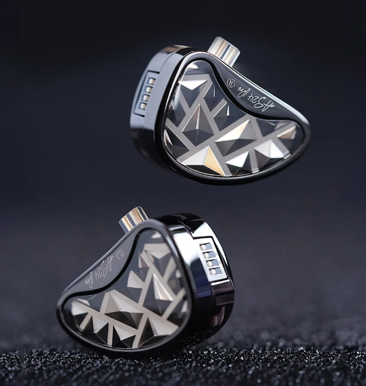

Fone Kz AS24 PRO
R$993,90
Solução definitiva para monitoramento de palco! A qualidade é essencial para manter a alta performance durante suas apresentações.
- 24 Drivers de Armadura Balanceada
- Sensibilidade: 109-114dB
- Impedância: 20-50Ω
- Comprimento do Cabo: 120cm
- Tipo de Plugue: 3,5mm
- Cabo Substituível: Sim